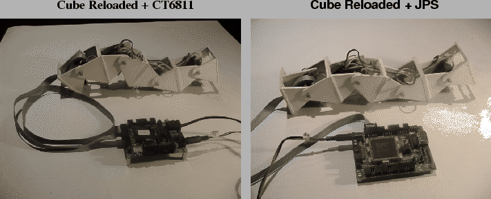

Una manera de controlar Cube Reloaded es utilizando un microcontrolador determinado para generar las señales de PWM (control de servos). El problema de la escalabilidad se resuelve poniendo estos micros en red.
Para Cube Reloaded se ha seguido utilizando el microcontrolador 6811,
con la tarjeta CT6811. El servidor de control se ha optimizado y ahora
es posible controlar hasta 8 servos con un único comparador. Consultar
el apéndice ![[*]](crossref.png) para más información.
El 6811 dispone de 5 comparadores, por lo que teóricamente se podrían
controlar hasta 40 servos. La tarjeta BT6811 sólo tiene conectores
para controlar 4 servos, por lo que se ha dejado de utilizar.
para más información.
El 6811 dispone de 5 comparadores, por lo que teóricamente se podrían
controlar hasta 40 servos. La tarjeta BT6811 sólo tiene conectores
para controlar 4 servos, por lo que se ha dejado de utilizar.
El cable de bus de 10 hilos que viene de la tarjeta pct-servos situada en uno de los módulos se lleva directamente al puerto B de la CT6811. El gusano puede tener hasta 8 módulos, sin necesidad de realizar ningún cambio. Si se quieren realizar robots con un número mayor de módulos, sólo hay que conectar las tarjetas CT6811 que sean necesarias a través del SPI (puerto D).
La tabla de control se puede almacenar en la memoria EEPROM, sin embargo, para hacer pruebas de locomoción es mejor generar las secuencias de movimiento desde el PC, con el programa cube-virtual[45], y descargarlas al gusano usando el programa cube-fisico[44], el mismo que se ha usado para Cube 2.0.
En la figura se muestra a Cube Reloaded
controlado desde una tarjeta CT6811. El cable de bus se conecta al
puerto B. La CT6811 está conectada a la alimentación (5v) y a un PC.
|
 |
El usar un microcontrolador es una solución viable y sencilla, sin embargo, si necesitamos más potencia de cálculo o queremos usar un microcontrolador más avanzado tendremos que rediseñar toda la electrónica. Nosotros nos tenemos que adaptar al microcontrolador y solucionar los problemas con él. Es una solución poco flexible.